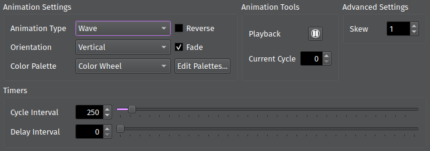
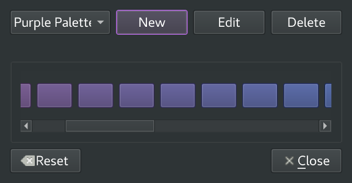

Animation Tab¶
The Animation tab is where you set Animation-specific settings such as the type of animation, the color palette, and the animation timing. Selecting certain Animations will cause additional controls to appear, allowing you to tweak parameters specific to that Animation.
{kind=link}
Choosing an Animation¶
Select an Animation using the Animation Type drop-down. You can also customize basic options such as:
Orientation: Which direction the Animation moves in.
Reverse: Whether to run the Animation forwards or in reverse
Fade: Whether to gradually transition between colors or jump from one color to the next
The Color Palette drop-down lets you select the color palette used to draw the Animation. Continue reading to learn more about customizing Palettes.
Tip
To reapply a Palette after customizing it, simply reselect it from the drop-down.
The Center controls let you change the location where the Animation is centered on the grid. This only applies to specific Animations, such as Radial and Mandelbrot.
Controlling Playback¶
The Animation Tools group box lets you play and pause the Animation, while also displaying the current cycle. You can jump to a specific cycle by pausing the Animation and entering the cycle index in the Current Cycle box.
Setting Timers¶
Cycle Interval sets the amount of time (in milliseconds) between Animation cycles. A cycle is the amount of time required for each pixel to change from one color to the next. For example, a Blink Animation has two cycles: one to go from off to on, and one to go from on to off. A Blink Animation with a cycle interval of 1000 means the animation takes 2 seconds to complete: 1 second to turn on, and 1 more second to turn off.
Delay Interval sets the amount of time (in milliseconds) to wait before starting a new cycle. For example, if our Blink Animation has a delay interval of 2000, then the animation will appear to pause for 2 full seconds at the end of each cycle. This is only available while fading is enabled.
Customizing Color Palettes¶
The Palette Editor lets you create your own custom color palettes or modify existing palettes. To open it, click Edit Palettes…
{kind=link}
Creating a New Palette¶
To create a new palette, click New Palette. Enter a name for the new palette, the number of colors, and the type of palette:
Blank creates a palette where all colors are black.
Random creates a palette where each color is randomly generated.
Scaling creates a palette that gradually scales from the first color to the last color. Select Mirror to scale from the first color to the last color, then back to the first color. This is useful for seamlessly blending Animations from one cycle to the next.
{kind=link}
Click OK to save your new palette.
Selecting and Editing a Palette¶
The drop-down in the top left corner lists all available palettes. Selecting a palette displays each of its colors. You can change any color by clicking on it and selecting a new color from the popup dialog. Clicking the Edit button lets you change the palette’s name, size, or color scheme.
You can also delete a palette by selecting it and clicking Delete. This won’t affect any Maestro components that are currently using the palette unless you re-select the Palette from the drop-down.
Resetting Palettes¶
To revert back to the default settings, click the Reset button. This will remove all customizations and restore the default palette set.